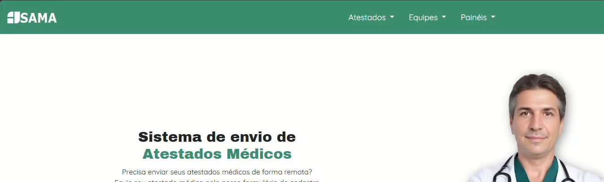

Olá! Meu nome é Cauã Mehiel Faria Cursino. Antes de passar para a parte acadêmica, gostaria de fazer uma
breve introdução. Nasci em São José dos Campos e atualmente tenho 18 anos de idade.
Atualmente estou cursando Análise e Desenvolvimento de Sistemas e pretendo trabalhar
na área de programação!
Meus principais hobbies envolvem desenhar, escutar músicas, ler livros e jogar jogos
de todos os tipos.
Sou um técnico em informática com três anos de formação e um grande interesse por desenvolvimento
de software e suporte técnico. Tenho experiência prática em diversas linguagens de programação e
tecnologias, além de um perfil proativo, analítico e sempre disposto a aprender. Meu objetivo é
integrar uma equipe onde possa aplicar meus conhecimentos, resolver desafios e continuar evoluindo
profissionalmente.
Clique aqui para ter acesso ao meu currículo completo!
Formações
Ao longo do curso e de experiências pessoais e acadêmicas, adquiri habilidades nas seguintes áreas:
C# (Visual Studio)
para aplicações desktop e desenvolvimento de sistemas com interface gráfica.
Python
Usada para automação, análise de dados e scripts diversos.
Java
para desenvolvimento de aplicativos e lógica de programação.
PHP
para desenvolvimento web e integração com bancos de dados.
SQL e SQLite
Modelagem, criação e manutenção de bancos de dados relacionais em MySQL e SQL Server.
JavaScript
para interatividade em páginas web.
HTML
para criação e organização de sites e sistemas web.
CSS
para a estilização e personalização de sites
Texto invisivel, se você achou isso: Olá!
Projetos
Aqui estão alguns do projetos que trabalhei! Alguns são para fins acadêmicos e outros pessoais.
Três Goblins
Sistema web desenvolvido para tornar a criação, organização
e armazenamento de fichas de RPG para jogaodores.
Linguagens: PHP, HTML, CSS e SQL

SAMA
Sistema web desenvolvido para alunos conseguirem enviar atestados
médicos de forma mais segura e avaliarem equipes ágeis.
Lingugens: HTML, CSS e Python
The Game Awards
Sistema web pessoal para armazenamento de jogos.
Linguagens: PHP, HTML, CSS e SQl
Calculadora
Calculadora simples para estudo de bibliotecas.
Linguagens: Python
Calculadora de Média
Calculadora de médias simples para estudo de linguagem e ferramenta.
Linguagens: Java
Conversor MP4
Pequeno programa para fins de estudo de bibliotecas que converte arquivos
de vídeo (MP4) para áudio (MP3).
Linguagens: Python
Habilidades
Soft Skills
Liderança
Adaptabilidade
Flexibilidade
Criatividade
Empatia
Trabalho em equipe
Hard Skills
Habilidade de escrita
Pacote Office
Criação de protótipos
Linguagens como HTML, Python e Sql
Língua inglesa
Documentos e Trabalhos
Alguns trabalhos mais relevantes e detalhados...
Três Goblins
Jun de 2023 - Nov de 2024
Descrição
Sistema Web utilizado para criar, armazenar e organizar fichas de personagens para jogadores de RPG (Role Playing Game).
O projeto nasceu a partir da reflexão sobre como as fichas de papel, comumente utilizadas pelos jogadores, podem tanto estragar
facilmente quanto gerar lixo excessivo. Sendo assim, a plataforma é uma alternativa viável e 100% on-line para que os jogadores
consigam ver seus personagens de forma simples e em qualquer lugar!
Desafios
Os maiores desafios se deram por conta da linguagem PHP, que pode ser considerada "antiga" para desenvolvimento web
Participação
Participei na maior parte do desenvolvimento front e back-end das páginas, utilizando os recursos do PHP ligado ao MySQL
Demonstrações
Linguagens utilizadas: HTML, PHP, CSS, SQL e JavaScript Tecnologias: Jquery e Ajax
Clique aqui para ter acesso a documentação completa!
SAMA - Sistema de Atestados Médicos e Avaliações
Fev de 2025 - Maio de 2025
Descrição
O SAMA é um sistema desenvolvido para digitalizar o envio de atestados médicos e facilitar a
avaliação contínua de equipes ágeis. Ele otimiza a gestão de documentos, melhora a
comunicação entre os usuários e simplifica processos administrativos, promovendo maior
transparência e eficiência. O projeto é desenvolvido com base na metodologia ágil Scrum,
que utiliza sprints para garantir entregas contínuas, adaptativas e de alto valor para o cliente.
Desafios
Os maiores desafios se deram pelo aprendizado do framework Flask e a divisão de tarefas na metodologia SCRUM
Participação
Participei no desenvolvimento front e back-end de algumas páginas, utilizando os recursos do framework
Demonstrações
Linguagens utilizadas: HTML, CSS, JavaScript e Python Tecnologias: Jquery, Ajax e Flask